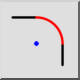
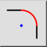
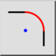
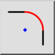

Zaokrąglij
Pasek narzędziowy / ikona:
 

Menu: Modyfikowanie > Zaokrąglij
Skrót: R, N
Polecenia: round | rn
Jest to tłumaczenie automatyczne.
Pasek narzędziowy / ikona:
 

Menu: Modyfikowanie > Zaokrąglij
Skrót: R, N
Polecenia: round | rn
Opis:
Zaokrągla narożnik konturu. Opcjonalnie, elementy brzegowe narożnika mogą być automatycznie przycinane w celu dopasowania do nowego kształtu.
Procedura: